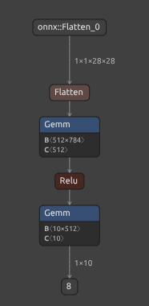
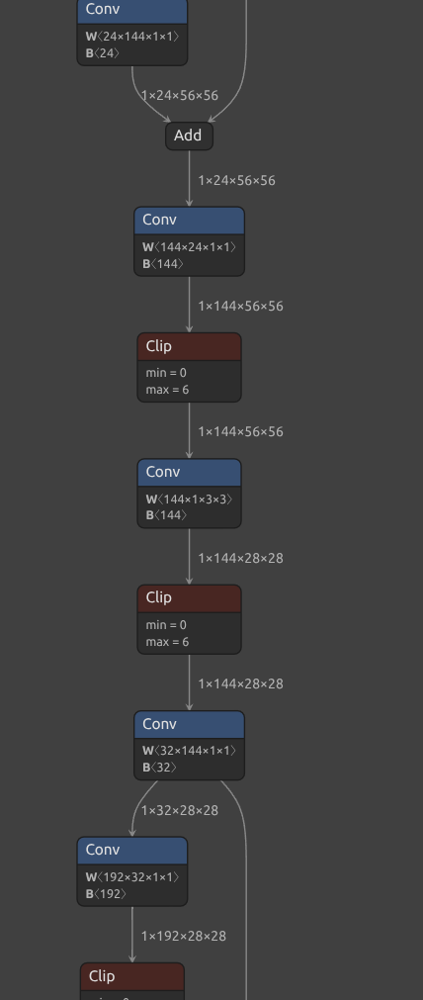

Neural Network Engine from Scratch in C
TL;DR
As a learning exercise, I coded a Neural Network inference engine from scratch in C. It doesn’t use any libraries besides protobuf for file parsing. It parses a ONNX model file, builds an internal graph representation, and executes operators like Gemm, Conv, and ReLU to classify images. The engine can run MNIST digit recognition and MobileNetV2 ImageNet classification. In this post I walk through the architecture, key data structures, operator implementations, and what I learned along the way.
This project was inspired by Michal Pitr’s excellent article Build Your Own Inference Engine From Scratch. I recommend checking it out as well.
Here is a screenshot of the output of the Neural Network Engine. Using MobileNetV2, it successfully classified the image as showing a crane.
The full source code can be found in this GitHub repository.
Why did I code this?
I recently got into contact with Neural Network edge inference at work while working on Machine Learning Tooling for Game Developers. Besides my time at university I never had much contact with Neural Networks. To gain better intuition I usually like to build things from scratch. It’s my way of learning.
What are Neural Network Inference Engines useful for?
If you don’t know what a Neural Network is I recommend checking out this video and then coming back here.
Neural Networks usually go through a so called training phase. The term training gives it a human touch but in reality its just an optimization process to adjust the parameters of the Neural Network so that it produces useful output. After the Neural Network finished training, it will get used for inference. Inference is the process of getting a prediction from an input. Usually Neural Networks get trained and do inference with the same framework. An example for such a framework is the popular PyTorch from Meta or TensorFlow from Google. While the process of training a neural network is expensive, inference can become very expensive as well. And in recent years people want to run Neural Networks on very constrained devices like phones, VR headsets, or laptops. This lead to the emergence of specialized inference engines for these devices.
Architecture
This is a visualization of a very simple Neural Network for digit recognition called MNIST:

And a very small excerpt from the more complex MobileNetV2 which has in total over 100 nodes:

Modern and more sophisticated Neural Networks are much more complicated. They have hundreds of nodes and branches.
Neural Networks are usually stored in files. The inference engine just takes the file and executes it. This way an inference engine can support many different models. I chose to make use of ONNX as the file format. ONNX is a popular neural network file format. The engine reads the file and builds up its internal data structures for execution. Reading the file is very easy as ONNX is in protobuf format.
Building up the internal data structures involves building a graph of all the nodes in the neural network. This graph will then be traversed during execution to generate a output. Input and output of Neural Networks are tensors. Tensors are a generalization of vectors and matrices.
Implementation
The engine consits of mainly two files src/main.c and src/base.c. I like to keep things simple. src/base.c is a excerpt of a base layer that I build over the years of writing programs in C. Its basically my own standard library. As the implementation is only two files I simply build it with a bash script ./build.sh.
One of my favourite takes about software development is that its enough to take a look at data structures to understand how the program works. So here are the key data structures:
Tensor - The fundamental data container. Tensors are generalizations of vectors and matrices and the way we send input and output to the neural network:
struct tensor {
f32 *data; // Flat array of float32 values
u32 dim[MAX_TENSOR_DIMS]; // Shape: e.g., [1, 3, 224, 224]
u32 dim_count; // Number of dimensions (1-4)
};
Tensors store multi-dimensional arrays in row-major order (meaning elements are laid out in memory with the last dimension varying fastest, row 0 comes first, then row 1, etc.). A 28x28 MNIST image is dim=[1, 1, 28, 28] with 784 floats. A MobileNetV2 input is dim=[1, 3, 224, 224] with 150,528 floats.
Graph Node - Represents a single operation in the neural network:
enum operator_type {
OPERATOR_TYPE_UNKNOWN = 0,
OPERATOR_TYPE_INPUT,
OPERATOR_TYPE_OUTPUT,
OPERATOR_TYPE_ADD,
OPERATOR_TYPE_SUB,
OPERATOR_TYPE_DIV,
OPERATOR_TYPE_CLIP,
OPERATOR_TYPE_GEMM,
OPERATOR_TYPE_FLATTEN,
OPERATOR_TYPE_RELU,
OPERATOR_TYPE_CONV,
OPERATOR_TYPE_MAX_POOL,
OPERATOR_TYPE_CONSTANT,
OPERATOR_TYPE_REDUCE_MEAN,
};
enum attribute_type {
ATTRIBUTE_TYPE_F32 = 0,
ATTRIBUTE_TYPE_I64,
ATTRIBUTE_TYPE_I64_ARRAY,
};
struct attribute {
char *name;
enum attribute_type type;
union {
f32 f;
i64 i;
struct {
i64 *data;
u32 count;
} i64_array;
} value;
};
struct graph_node {
u32 input_edges[GRAPH_MAX_INPUT_EDGES]; // Indices of nodes that feed into this one
u32 output_edges[GRAPH_MAX_OUTPUT_EDGES]; // Indices of nodes this feeds into
char *name; // Node identifier from ONNX
enum operator_type type; // GEMM, CONV, RELU, etc.
char **inputs; // Names of input tensors
char **outputs; // Names of output tensors
struct attribute *attributes; // Operator parameters (kernel_size, strides, etc.)
};
Graph - The complete computational graph of the Neural Network. It stores the topological sorted nodes:
struct graph {
struct graph_node *nodes; // All nodes in the model
struct graph_node **sorted_nodes; // Topologically sorted for execution
u32 nodes_count;
u32 sorted_nodes_count;
char **inputs; // Graph input names (e.g., "input.1")
char **outputs; // Graph output names (e.g., "output")
};
App Context - Application state tying everything together:
struct app_context {
struct arena *global_arena; // Memory for persistent data
struct arena *inference_arena; // Memory cleared each inference run
struct graph *graph; // The loaded model graph
struct weight_data *weights; // Named tensor storage (weights + intermediates)
u32 weight_count;
const char *config_path;
const char *model_path;
const char *input_path;
};
Memory Management: Arena Allocators
The engine uses arena allocation instead of malloc/free for all memory management. An arena is a simple bump allocator: you grab a large block of memory upfront, then allocate by incrementing a pointer. No individual frees, no fragmentation, no overhead per allocation. This makes allocations extremely fast and easy to manage. Another benefit is that data gets automatically laid out cache friendly. My implementation uses some tricks around virtual memory to make arenas easily growable in case they run out of memory.
The engine uses two arenas with different lifetimes:
struct app_context {
struct arena *global_arena; // Lives for entire program
struct arena *inference_arena; // Cleared each inference run
// ...
};
-
global_arena: Holds the model graph structure, weight tensors, and anything that persists across inference runs. Allocated once at startup, freed at shutdown. -
inference_arena: Holds intermediate tensors created during inference. Cleared after each run witharena_clear(), so memory is reused without fragmentation:
for (u32 loop = 0; loop < loop_count; ++loop) {
arena_clear(app_ctx->inference_arena); // Reset for this run
perform_inference(app_ctx->inference_arena, app_ctx);
}
For temporary short lived allocations within a function, scratch arenas provide scoped memory:
struct arena_temp scratch = arena_scratch_begin(NULL, 0);
// Temporary allocations here...
struct graph_node **stack = arena_push_array(scratch.arena, ...);
// Use stack for topological sort...
arena_scratch_end(scratch); // All scratch memory released
There is much more to say about arena allocators. Ryan Fleury wrote a excellent article that is worth checking out.
ONNX Model Loading
The loading process extracts three things from an ONNX file:
- Graph structure - nodes and their connections
- Initializers - pre-trained weight tensors
- Metadata - input/output names and shapes
static b8 load_model(struct arena *arena, struct app_context *app_ctx,
struct graph **out_graph)
{
// Read and parse protobuf
Onnx__ModelProto *model = onnx__model_proto__unpack(NULL, model_size, model_data);
// Load weights from initializers
for (u32 i = 0; i < model->graph->n_initializer; i++) {
Onnx__TensorProto *initializer = model->graph->initializer[i];
// Copy weight data into our tensor format
struct tensor tensor = { ... };
app_insert_weight(app_ctx, &(struct weight_data){
.name = initializer->name,
.tensor = tensor,
});
}
// Build graph from nodes
struct graph *graph = graph_alloc(arena, model->graph);
*out_graph = graph;
}
I don’t pass the ONNX file directly to the inference engine, but submit a .cfg file. The .cfg file contains the path to the ONNX file and some metadata like how the inputs and outputs look.
If you wonder what file format that is. It’s my own. I call it sd. Which stands for structured data. Its very similar to JSON but a little bit less verbose. For example there aren’t any commas. Everything gets split by spaces or new lines. In addition identifiers don’t need to be surrounded by "" which makes it easier to read.
model_path: "models/mnist_model.onnx"
batch_size: 1
normalize_input: 1
inputs: [{ name: "input.1", data_type: "float32", shape: [1 1 28 28] }]
outputs: [{ name: "21", data_type: "float32", shape: [1 10] }]
Graph Execution
Before execution, nodes are topologically sorted so each node runs only after its inputs are ready. Topological sorting is a fundamental algorithm for directed acyclic graphs (DAGs) that produces a linear ordering of nodes where each node appears before all nodes that depend on it. Note that the sort may fail if there a cycles. I’m assuming here that I only get valid input.
The algorithm works by performing a depth-first search (DFS) from input nodes, recursively visiting each node’s dependencies and adding them to a stack in post-order—meaning a node is added only after all nodes it depends on have been processed. When we reverse this stack, we get the execution order: nodes with no dependencies come first, followed by nodes whose dependencies have already been satisfied.
For example, if node C depends on both A and B, the topological sort guarantees that both A and B will execute before C, regardless of which order they appear in the original graph structure.
static void graph_topological_sort(struct graph *graph)
{
// DFS-based topological sort
for (u32 i = 0; i < graph->nodes_count; i++) {
struct graph_node *node = &graph->nodes[i];
// Start from nodes connected to graph inputs
if (is_input_node) {
topological_sort_dfs(graph, visited, &visited_count,
stack, &stack_count, node);
}
}
// Reverse the stack to get execution order
for (u32 i = 0; i < stack_size; ++i) {
graph->sorted_nodes[i] = node_stack[stack_size - i - 1];
}
}
And finally, the main inference loop. The sorted_nodes array contains the nodes in topological sorted order. The loop processes them one after another.
Each node has one or more inputs. The node can receive the values of the input by calling app_find_weight. Note that app_find_weight performs a linear search. I noticed that linear searches are often quite fast if the search space is not too big. It may even be faster than using a hash map. If the search space gets larger it makes sense to use a hash map to accelerate the search.
After the node executed its output gets saved as a weight to make it available for the next node. Note that its only creating a shallow copy of the tensor which makes it very fast. The values of the tensors are stored in the arena. I don’t need to worry about the memory management because the lifetime of the tensor is tied to the lifetime of the arena allocator.
static b8 perform_inference(struct arena *arena, struct app_context *app_ctx)
{
struct graph *graph = app_ctx->graph;
for (u32 i = 0; i < graph->sorted_nodes_count; i++) {
struct graph_node *node = graph->sorted_nodes[i];
// Gather input tensors by name
for (u32 j = 0; j < node->inputs_count; j++) {
struct weight_data *input = app_find_weight(app_ctx, node->inputs[j]);
input_tensors[j] = input->tensor;
}
// Execute the operator
struct tensor output = evaluate_node(arena, node, input_tensors);
// Store output for downstream nodes
app_insert_weight(app_ctx, &(struct weight_data){
.name = node->outputs[0],
.tensor = output,
});
}
}
evaluate_node reads the type of the current node and executes an operator. I’ve implemented the following operators:
GEMM
General Matrix Multiplication which is the workhorse of neural networks and fully connected layers. It computes Y = alpha * A @ B + beta * C. The operator is implemented in op_gemm. The transpose flags (trans_a, trans_b) indicate whether each input matrix should be transposed before multiplication. This lets ONNX models store weight matrices in whichever layout is convenient without requiring a separate transposition step during inference.
static struct tensor op_gemm(struct arena *arena, struct tensor a,
struct tensor b, struct tensor bias,
b8 trans_a, b8 trans_b, f32 alpha, f32 beta)
{
// Output dimensions depend on transposition
u32 n = trans_a ? a.dim[1] : a.dim[0]; // output rows
u32 m = trans_b ? b.dim[1] : b.dim[0]; // shared dimension (sum over this)
u32 k = trans_b ? b.dim[0] : b.dim[1]; // output cols
struct tensor out;
out.dim[0] = n;
out.dim[1] = k;
out.data = arena_push_array(arena, f32, n * k);
f32 *A = a.data;
f32 *B = b.data;
f32 *out_data = out.data;
f32 *bias_data = bias.data;
// Matrix multiplication: C[r,c] = \sum_i A[r,i] * B[i,c]
for (u32 r = 0; r < n; ++r) {
for (u32 c = 0; c < k; ++c) {
f32 res = 0;
for (u32 i = 0; i < m; ++i) {
f32 aVal = trans_a ? A[i * n + r] : A[r * m + i];
f32 bVal = trans_b ? B[c * m + i] : B[i * k + c];
res += aVal * bVal;
}
out_data[r * k + c] = res * alpha;
}
}
// Apply bias term
for (u32 r = 0; r < n; ++r) {
for (u32 c = 0; c < k; ++c) {
out_data[r * k + c] += bias_data[c] * beta;
}
}
return out;
}
Conv (Convolution)
Convolution is the backbone of image recognition netoworks it slides a filter across an image to detect features. The implementation uses the im2col (“image to column”) trick: instead of computing convolutions directly with nested loops, im2col rearranges the input image patches into columns of a matrix so that the entire convolution can be performed as a single matrix multiplication. This trades some extra memory for much better cache utilization and the ability to leverage optimized GEMM routines.
static struct tensor op_conv(struct arena *arena, struct tensor input,
struct tensor weights, struct tensor bias, ...)
{
// Calculate output dimensions
i64 out_h = conv_out_dim(H, pad_t, pad_b, kH, dilation_h, stride_h);
i64 out_w = conv_out_dim(W, pad_l, pad_r, kW, dilation_w, stride_w);
for (i64 n = 0; n < N; ++n) {
for (i64 g = 0; g < group; ++g) {
// Convert image patches to columns
im2col_nchw(Xg, Cg, H, W, kH, kW, ...);
// Matrix multiply: weights @ im2col_matrix
conv_gemm(Wg, col, Yg, Mg, kernel_dim, out_HW);
}
// Add bias
for (i64 m = 0; m < M; ++m) {
for (i64 p = 0; p < out_HW; ++p) {
Y[m * out_HW + p] += bias.data[m];
}
}
}
return output;
}
ReLU (Rectified Linear Unit)
The simplest activation function. It just clips negative values to zero:
static struct tensor op_relu(struct arena *arena, struct tensor a)
{
struct tensor out = tensor_alloc(arena, a.dim, a.dim_count);
for (usize i = 0; i < total_size; i++) {
out.data[i] = max(0.0f, a.data[i]);
}
return out;
}
ReduceMean
Averages values along specified axes. Used in MobileNetV2 to collapse spatial dimensions before the final classifier. My implementation is not particularly efficient, but general. There are many optimizations available for specific dimensions.
static struct tensor op_reduce_mean(struct arena *arena, struct tensor input,
i64 *axes, u32 axes_count, i64 keepdims)
{
// Mark which dimensions to reduce
for (u32 i = 0; i < axes_count; i++) {
reduce[axes[i]] = true;
}
// Accumulate values and divide by reduction size
for (usize in_idx = 0; in_idx < in_size; in_idx++) {
out.data[out_idx] += input.data[in_idx];
}
for (usize i = 0; i < out_size; i++) {
out.data[i] /= (f32)reduce_size;
}
}
Clip
Clip clamps each element of the tensor to a specified range. Values below min_value are set to min_value, and values above max_value are set to max_value.
static struct tensor op_clip(struct arena *arena, struct tensor a,
f32 min_value, f32 max_value)
{
usize total_size = 1;
for (u32 i = 0; i < a.dim_count; i++) {
total_size *= a.dim[i];
}
struct tensor out = tensor_alloc(arena, a.dim, a.dim_count);
for (usize i = 0; i < total_size; i++) {
f32 val = a.data[i];
if (val < min_value) {
val = min_value;
} else if (val > max_value) {
val = max_value;
}
out.data[i] = val;
}
return out;
}
Flatten
Flatten reshapes a tensor into a 2D matrix by collapsing dimensions. All dimensions before the specified axis are multiplied together to form the first dimension, and all dimensions from axis onward form the second. This is typically used to convert a multi-dimensional feature map into a flat vector before feeding it into a fully connected layer.
static struct tensor op_flatten(struct tensor a, i64 axis)
{
ASSERT(axis < a.dim_count);
i64 dim_before = 1;
for (i64 i = 0; i < axis; i++) {
dim_before *= a.dim[i];
}
i64 dim_after = 1;
for (i64 i = axis; i < a.dim_count; i++) {
dim_after *= a.dim[i];
}
a.dim_count = 2;
a.dim[0] = (u32)dim_before;
a.dim[1] = (u32)dim_after;
return a;
}
Add, Sub, Div
These are normal addition, subtraction, and division operations. They are implemented with broadcasting, which allows operations on tensors of different shapes by automatically expanding smaller dimensions to match larger ones. For example, adding a bias vector of shape [10] to a batch of outputs with shape [32, 10] broadcasts the bias across all 32 samples.
static f32 binary_add(f32 a, f32 b)
{
return a + b;
}
static f32 binary_sub(f32 a, f32 b)
{
return a - b;
}
static f32 binary_div(f32 a, f32 b)
{
return a / b;
}
static struct tensor op_add(struct arena *arena, struct tensor a,
struct tensor b)
{
return op_binary_broadcast(arena, a, b, binary_add);
}
static struct tensor op_sub(struct arena *arena, struct tensor a,
struct tensor b)
{
return op_binary_broadcast(arena, a, b, binary_sub);
}
static struct tensor op_div(struct arena *arena, struct tensor a,
struct tensor b)
{
return op_binary_broadcast(arena, a, b, binary_div);
}
static struct tensor op_binary_broadcast(struct arena *arena, struct tensor a,
struct tensor b, binary_op_fn op)
{
u32 out_dims[MAX_TENSOR_DIMS];
u32 out_dim_count;
b8 compatible = compute_broadcast_shape(out_dims, &out_dim_count, a, b);
ENSURE_MSG(compatible, "Tensors are not broadcast-compatible");
struct tensor out = tensor_alloc(arena, out_dims, out_dim_count);
usize total_size = 1;
for (u32 i = 0; i < out_dim_count; i++) {
total_size *= out_dims[i];
}
u32 coords[MAX_TENSOR_DIMS] = { 0 };
for (usize i = 0; i < total_size; i++) {
usize a_idx = broadcast_flat_index(coords, out_dim_count, a.dim,
a.dim_count);
usize b_idx = broadcast_flat_index(coords, out_dim_count, b.dim,
b.dim_count);
out.data[i] = op(a.data[a_idx], b.data[b_idx]);
// Increment coordinates (rightmost first)
for (i32 d = (i32)out_dim_count - 1; d >= 0; d--) {
coords[d]++;
if (coords[d] < out_dims[d]) {
break;
}
coords[d] = 0;
}
}
return out;
}
Python Driver
An important convenience part is the Python driver. The Python driver takes input and a .cfg file and calls the inference engine for a prediction. At the end it also visualizes the output which makes debugging easier. It can be invoked for example like this:
python driver.py -config model_complex.cfg -input inputs/image_0.ubyte -family mnist
or
python driver.py -config mobilenetv2.cfg -input image.png -family mobilenetv2 \
-classes mobilenetv2_raw_images/imagenet_classes.txt
The inference engine can be directly invoked like this
./.out/inference_engine -config model_conv.cfg -input inputs/image_0.ubyte
Conclusion
Building an inference engine from scratch was a fun exercise. It was cool to see how much of my game engine development skills I can transfer to this kind of work. There are a ton of optimization possibilities.
The full source is in src/main.c (~1900 lines) and driver.py (~530 lines). The C code is dependency-minimal (just protobuf-c for ONNX parsing), and the Python driver only needs numpy, PIL, and matplotlib.
Next Steps
There are a lot of things to improve. Mainly around performance and robustness.
Matrix multiplication is a process that can be easily done in parallel. GPUs are very good at this. A single matrix multiplication that takes milliseconds on CPU can run in microseconds on GPU. This can be achieved with CUDA/OpenCL or a low level graphics API directly like Vulkan.
It would also be interesting exploring SIMD for fast CPU inference.
Another interesting topic is operator fusion. For example, instead of running Conv, ReLU, and BatchNorm as three separate passes over memory, they could be fused into a single kernel that reads input once and writes output once. Memory bandwidth is often the bottleneck, not compute, so reducing memory traffic speeds things up.
Especially for CPU inference parallelizing independent operations across CPU cores would be interesting. For batch inference, different samples can run in parallel. Within a single sample, operations on independent graph branches can run concurrently.
Besides that it would be interesting to make a Transformer like an LLM run.